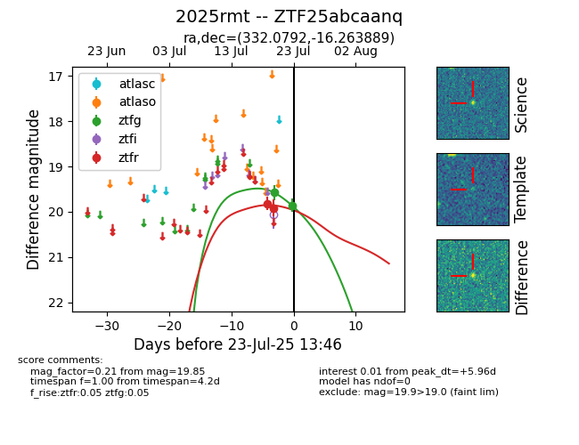

Target ZTF25abcaanq at 2025-07-23 13:46, see:
FINK: fink-portal.org/ZTF25abcaanq
Lasair: lasair-ztf.lsst.ac.uk/objects/ZTF25abcaanq
ALeRCE: alerce.online/object/ZTF25abcaanq
TNS: wis-tns.org/object/2025rmt
YSE: ziggy.ucolick.org/yse/transient_detail/2025rmt
alt names
ZTF25abcaanq (ztf,fink)
2025rmt (tns,yse)
coordinates:
equatorial (ra, dec) = (332.0792,-16.26389)
galactic (l, b) = (40.4016,-50.77345)
photometry
last ztfg=19.85, ztfr=19.91
2 ztfg, 2 ztfr detections
